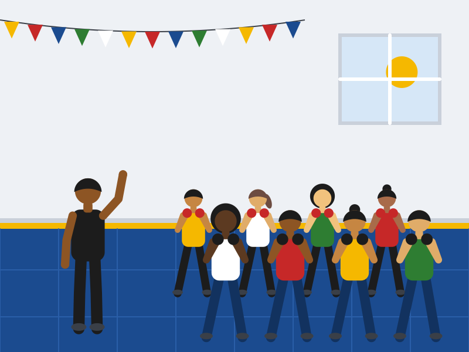
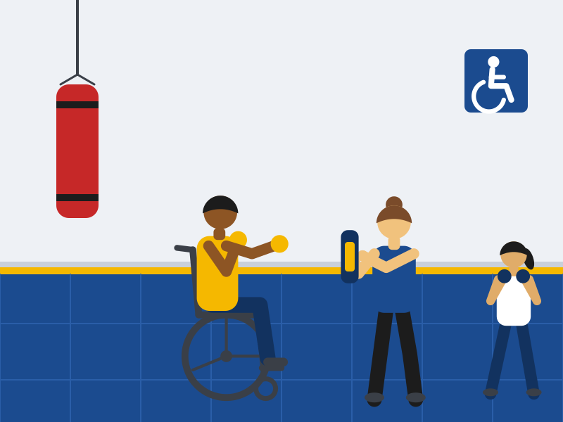
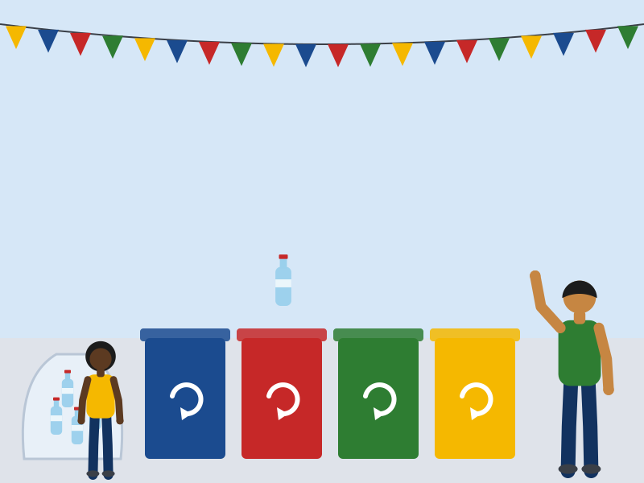
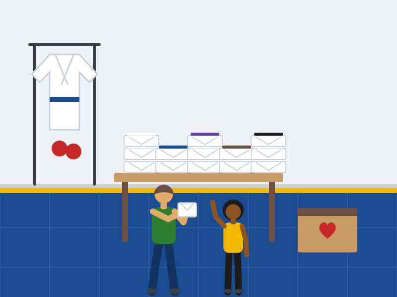
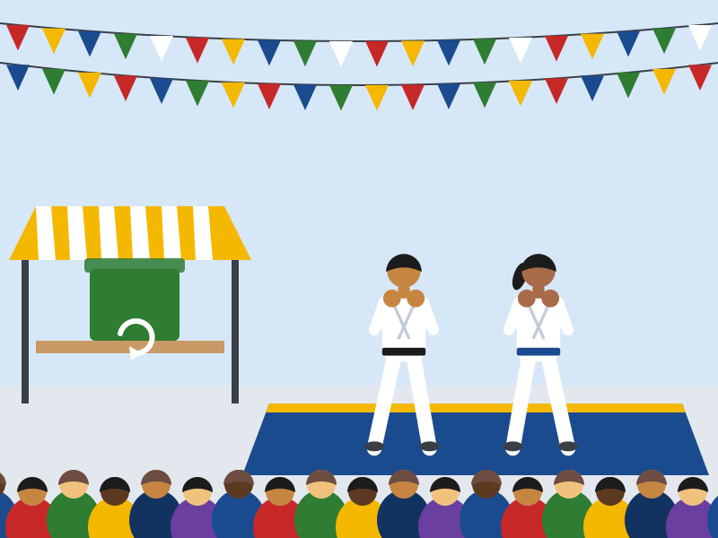
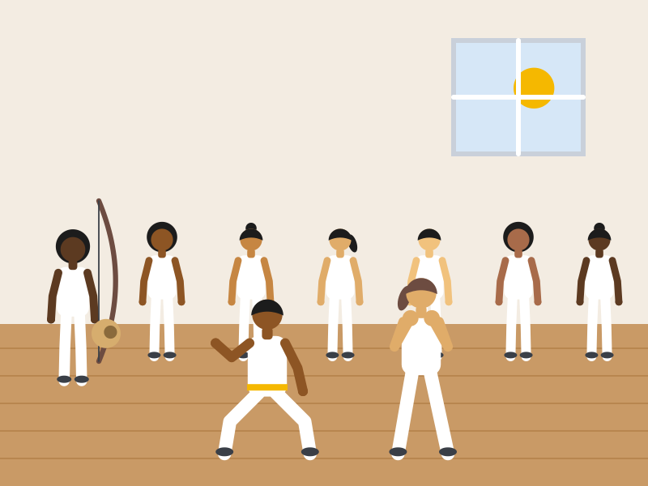

Ações sociais
O coração da Base Forte Leste: esporte gratuito para a juventude, inclusão de pessoas com deficiência e cuidado com o meio ambiente.
Aulas gratuitas de sábado para a juventude
Todo sábado, das 9h às 11h, o tatame fica aberto para jovens de 10 a 17 anos da periferia de Itaquera e dos bairros vizinhos. Sem mensalidade, sem matrícula e sem precisar ter equipamento.
As aulas começaram em 2019 com Muay Thai e hoje também têm Capoeira. Os professores são os mesmos das turmas regulares, e os alunos mais graduados da academia atuam como monitores voluntários: ajudam no aquecimento, emprestam as luvas e cuidam dos mais novos.
O que o jovem encontra aqui
- Treino com professor qualificado, em turmas de até 25 alunos.
- Luvas, caneleiras e protetores emprestados pela academia.
- Regras claras de respeito e um espaço seguro para conviver.
- Um motivo para levantar cedo no fim de semana.


Tatame para todos: inclusão de pessoas com deficiência
Na Base Forte Leste, quem se adapta é o treino. Pessoas com deficiência treinam nas turmas regulares e também contam com uma turma inclusiva.
Antes da primeira aula, a professora Larissa, especialista em atividade física adaptada, conversa com o aluno e com a família para entender as necessidades de cada um. A partir daí, os exercícios são ajustados: golpes feitos sentados, comandos de voz para quem não enxerga, sinais visuais para quem não ouve e mais tempo de descanso quando necessário.
- Turma inclusiva de Boxe adaptado: quartas-feiras, às 15h, com até 8 alunos.
- Acompanhante pode participar do treino.
- Espaço com rampa, banheiro adaptado e tatame sem degraus.
Recicla na luta: arrecadação nos eventos
Festivais e campeonatos reúnem muita gente e geram muito lixo. Por isso, todo evento da academia tem um ponto de coleta seletiva.
Como funciona
- O público traz garrafas PET, latas, papelão e vidro limpos.
- Os monitores separam o material nos coletores com as cores da coleta seletiva: azul para papel, vermelho para plástico, verde para vidro e amarelo para metal.
- Tudo é pesado e entregue a uma cooperativa de catadores da região.
- Quem leva recicláveis ganha uma aula experimental gratuita.
Também recebemos kimonos, luvas e caneleiras usados em bom estado. Eles são revisados e emprestados aos jovens das aulas de sábado. Saiba como doar

Para levar do tatame para a vida
- Força não é bater mais forte. É levantar quem caiu do seu lado.
- No tatame, todo mundo começa de faixa branca.
- O treino acaba às 11h. O que ele ensina vai com você a semana inteira.
Galeria



Impacto social e sustentável
Os números mostram o que o trabalho da academia já mudou na comunidade.
| Indicador | 2024 | 2025 | 2026* |
|---|---|---|---|
| Jovens atendidos nas aulas gratuitas de sábado | 48 | 72 | 85 |
| Aulas gratuitas realizadas | 46 | 48 | 38 |
| Alunos com deficiência matriculados | 7 | 11 | 15 |
| Recicláveis arrecadados nos eventos (kg) | 95 | 140 | 231 |
| Kimonos, luvas e caneleiras doados ou reaproveitados | 12 | 21 | 34 |
| Panfletos de papel impressos | 12.000 | 9.000 | 4.000 |
| Voluntários (monitores e familiares) | 6 | 9 | 12 |
| * 2026: dados até outubro. Com o site no ar, a meta para 2027 é não imprimir nenhum panfleto. Fonte: registros internos da academia (valores ilustrativos do projeto acadêmico). | |||
Quer fazer parte?
Inscreva um jovem, doe equipamentos ou seja voluntário. Toda ajuda vira treino.